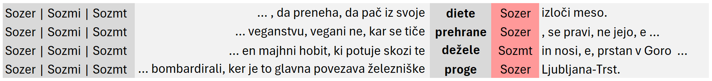
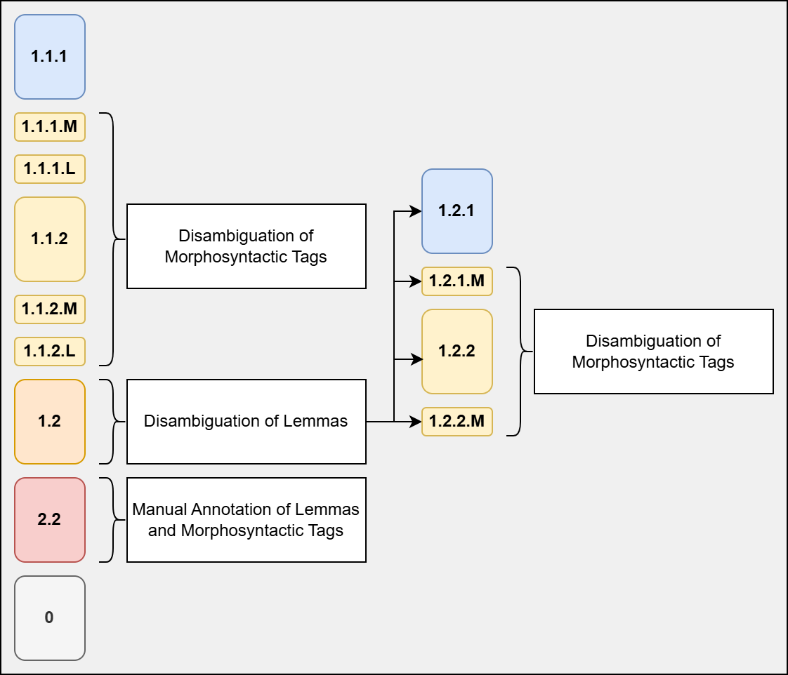

1V prispevku predstavljamo nov polavtomatski pristop k popravljanju lem in oblikoskladenjskih oznak. Za razliko od predhodnih pristopov k ročnemu označevanju slovenskih korpusov nova metoda vsebuje dodaten korak, v katerem pojavnice ter njihove strojno pripisane leme in oblikoskladenjske oznake navzkrižno primerjamo z naborom oblik v Slovenskem oblikoslovnem leksikonu Sloleks. Na podlagi primerjave vsako pojavnico uvrstimo v enega od označevalnih scenarijev. Novi pristop občutno zmanjša količino časa in sredstev, ki jih je treba vložiti v označevanje, tako da odstrani veliko število odvečnih označevalnih nalog. Med prednostmi te metode je tudi možnost, da označevalne naloge razdelimo v sklope s podobnimi označevalnimi problemi (npr. razločevanje slovničnih enakopisnic). Ob ustrezni pripravi podatkov lahko metoda tudi drastično zmanjša potrebo po tem, da se označevalci seznanijo z obširnim označevalnim sistemom Multext-East za slovenščino, kar je v sorodnih označevalnih kampanjah predstavljalo ozko grlo. Metodo smo preizkusili med označevanjem Učnega korpusa govorjene slovenščine ROG. Algoritem pripisovanja označevalnih scenarijev preizkusimo tudi na Učnem korpusu pisne slovenščine SUK, ki je bil označen s tradicionalnim označevalnim pristopom (poved za povedjo, pojavnica za pojavnico). Predstavimo rezultate primerjave in zagovarjamo, da bi bilo metodo treba uporabiti pri prihodnjih označevalnih kampanjah, da z njo prihranimo čas in stroške ter nasploh izboljšamo doslednost označevanja, pri čemer razpravljamo tudi o nekaterih slabostih in pasteh predlaganega pristopa.
2Ključne besede: lematizacija, oblikoskladenjsko označevanje, govorjena slovenščina, korpusi govorjene slovenščine, ročno označeni korpusi
1In the paper, we present a new semi-automatic approach to correcting lemmas and morphosyntactic tags. Unlike previous manual annotation approaches for Slovene corpora, the new method contains an additional step in which tokens and their automatically assigned lemmas and morphosyntactic tags are cross-referenced with the set of forms included in the Sloleks Morphological Lexicon of Slovene. Based on the comparison, each token is classified into one of several annotation scenarios. The new approach has noticeably reduced the time and resources invested into annotation by eliminating a large number of redundant tasks. The advantages of this method include the possibility of dividing annotation tasks into groups consisting of similar annotation problems (e.g. disambiguation of grammatical homographs). With adequate data preparation, it also drastically reduces the necessity for annotators to be familiar with the extensive Multext-East morphosyntactic tag set for Slovene, a restriction that created a bottleneck in the annotation process in similar annotation campaigns. The method was tested during the annotation process for the ROG Training Corpus of Spoken Slovene. In addition, we also test the scenario classification algorithm on the SUK Training Corpus of Written Slovene, which was annotated using the traditional sentence-by-sentence, token-by-token approach. We present the results and argue that the method should be used in future annotation campaigns to save resources and improve overall annotation consistency, while also discussing some of the caveats and disadvantages of the proposed approach.
2Keywords: lemmatization, morphosyntactic tagging, training corpora, morphological lexicon, corpus annotation
1The latest tools and models for lemmatization and morphosyntactic tagging of Slovene have achieved impressive results, with the latest performances of CLASSLA-Stanza1 amounting to an F1-score of 99.11 for lemmatization2 and 98.27 for morphosyntactic tagging.3 However, automatic processing is not sufficient when compiling high-quality training corpora or other benchmark datasets. Manual corrections are required, particularly if the models are applied to texts of a different genre or medium compared to what the models were trained on. The CLASSLA-Stanza models for Slovene were trained mostly on written texts, so their application on transcriptions of spoken Slovene yields less accurate results.
2In recent years, two projects have highlighted the need for a high-quality training corpus dedicated to spoken Slovene, similar to the SUK Training Corpus of Written Slovene.4 The MEZZANINE5 project focuses on the development of open-access resources for spoken Slovene. Among other goals, the project aims to provide datasets annotated with speech acts and disfluencies. At the same time, one of the goals of the SPOT6 project7 is to compile a corpus of spoken Slovene manually annotated with dependency relations. The joint efforts of both projects thus jumpstarted the compilation of the ROG Training Corpus of Spoken Slovene.8 However, the compilation of a training corpus of spoken Slovene along the lines of SUK requires manual corrections of annotations for lemmas and morphosyntactic tags, which can be a cumbersome and complex task that traditionally requires a large investment in time and resources with a relatively low cost-benefit (more on this in Section 2), even despite the fact that the planned size of ROG was relatively manageable (100,000 tokens in ROG compared to 1,000,000 tokens in SUK).
3To facilitate the annotation process, a new method was developed. It adds an additional preprocessing phase before manual annotation: all tokens are first cross-referenced with the Sloleks Morphological Lexicon of Slovene.9 The annotation data is then divided into several packages that focus on similar annotation problems (e.g. discrimination between different cases). This approach drastically accelerates the annotation process, improves the consistency of annotation decisions, and reduces the number of redundant reviews (e.g. by skipping unambiguous units) and total annotation costs.
4This paper is an extended version of a previous paper in Slovene.10 In this version, we provide a more detailed description of the approach (Section 3). We focus less on the Slovene-specific dilemmas and more on the general benefit of the method to make the approach more understandable for the international audience. In addition to the evaluations of the method originally performed on the ROG Training Corpus of Spoken Slovene, we also evaluate the method on the SUK Training Corpus of Written Slovene (Section 4.2) to confirm that the method is reliable enough for other potential benchmark datasets. We also perform a more in-depth analysis on the unambiguous tokens from ROG (Section 5), which were skipped in the original paper. We take the first steps toward a more fine-grained analysis of different annotation tasks in terms of their complexity and annotation difficulty (Section 6).
5The paper is structured as follows: in Section 2, we provide a short overview of related work and describe the experience of past annotation campaigns. In Section 3, we present the new semi-automatic approach and the manner of categorizing tokens by annotation scenarios. We continue by describing the data preparation and annotation phases, as well as the evaluation of the method on both ROG and SUK datasets (Section 4). In Section 5 we describe the results of the annotation on the ROG dataset and compare them with the results of the evaluation. In Section 6, we describe the most frequent annotation tasks in terms of their complexity. We conclude the paper in Section 7 with plans for future work.
1The most extensive annotation campaigns on the levels of lemmas and morphosyntactic tags for Slovene were carried out for the training sets JANES-Tag11 and JANES-Norm12 as part of the JANES project,13 and the SUK 1.0 Training Corpus of Slovene14 and its subcorpora, such as SentiCoref.15
2In both campaigns, the annotation process was similar: the texts were first automatically tokenized, segmented into sentences, morphosyntactically tagged and lemmatized. Automatic annotations were then manually corrected by a group of annotators and checked by curators who accepted the final decisions. The campaigns from the JANES project used the WebAnno annotation platform, 16 which allows for multiple annotations of the same text by different annotators and facilitates curation in examples of disagreement. For the subcorpora of SUK 1.0, the annotation process took place in Google Sheets.
3Both the SUK and JANES campaigns were large-scale and required a great deal of organization and resources in terms of time and human input. The corrections of tokenization, sentence segmentation and normalization of the first part of the JANES-Norm corpus included a total of 11 annotators and took 7 weeks to complete, 17 with a total of 270 hours of annotator work and an additional 45 hours of curation. Lemmatization and morphosyntactic tags for JANES-Tag (also with 11 annotators) was carried out between March 2016 and October 2016.18 Correcting the SUK corpus19 with 24 annotators took approximately 4 months. A significant factor contributing to the length of both campaigns was annotator training, which particularly in the case of the Multext-East v6 (MTE-6)20 morphosyntactic annotation scheme for Slovene requires much preparation and is the reason for a steep learning curve for new annotators. Controlling inter-annotator agreement and curating the final decisions also prolong the process.
4All the listed campaigns implemented the approach of correcting individual sequential tokens in the text, which is cognitively taxing especially for morphosyntactic annotation, as it requires the annotators to mentally switch between varying problems depending on the part-of-speech of the relevant token. The SentiCoref annotation campaign21 decided to alleviate this by dividing the annotators into separate groups, each dedicated to the annotation of different parts-of-speech.
5The results of the most recent annotation campaign as part of the RSDO project22 have shown that the accuracy of automatic annotations for Slovene is high enough to forego comprehensive manual reviews and instead rely on semi-automatic approaches that focus on the most problematic annotation dilemmas. For instance, in the SentiCoref corpus, the lemmas of only 1.3% of all tokens were corrected (which is in line with the expected accuracy of the lemmatization model), and only 2.9% of all automatic morphosyntactic tags were changed. The analysis of these corrections has also shown that approximately 25% of all corrections can be attributed to problems discriminating between common and proper nouns ( Delo vs. delo) and disambiguating grammatical homographs (e.g. between the accusative and nominative cases with inanimate masculine nouns).
1The new annotation process is based on the Sloleks Morphological Lexicon of Slovene. In our research, we used version 3.0,23 particularly the approximately 100,800 manually validated lexemes (their cca. 2,800,000 inflected forms). The Sloleks lexicon forms the morphological part of the Digital Dictionary Database of Slovene24 and is the largest open-access machine-readable database of Slovene words. For each lexeme in the lexicon (e.g. miza 'table'), all its forms (inflected by case, number, tense, etc.) are listed as well (e.g. mize – genitive singular, mizi – dative singular, mizo – accusative singular), along with their corresponding morphosyntactic tags using the Multext-East v6 (MTE-6) system. In MTE-6, all morphosyntactic features for a given word are listed in a string of symbols (e.g. Sozei – samostalnik 'noun', občni 'common', ženski spol 'feminine', ednina 'singular', imenovalnik 'nominative').
2The proposed method is based on two basic assumptions: (1) for certain tokens in a given corpus, no manual validation of automatic lemmas and morphosyntactic tags is required as these tokens are unambiguous in the lexicon; (2) for some tokens, only lemmas or only morphosyntactic tags need to be manually validated, and even in that case, the set of potential annotation options according to the lexicon is limited. Instead of approaching the annotation completely from scratch for each token, a cross-comparison with the lexicon allows the annotator to select from e.g. a set of three options among morphosyntactic tags instead of the full set of approximately 1,900 tags.
3The new approach cross-references each token with the forms in the lexicon and checks the following criteria: (a) is the form present in the lexicon? (b) can the analyzed form be assigned a single lemma or multiple different lemmas according to the lexicon? (c) can the combination of the form and the lemma be assigned a single morphosyntactic tag or multiple different morphosyntactic tags according to the lexicon?
4Based on the results of the cross-reference, the algorithm assigns a specific annotation scenario to each token. The set of different annotation scenarios is shown in Table 1, and each scenario is described in more detail in the following section.
| Scenario | Description | Example |
| 1.1.1 | single form, single lemma, single tag | zdaj – zdaj – Rsn |
| 1.1.2 | single form, single lemma, multiple tag options | slik – slika – Sozdr|Sozmr |
| 1.2 | single form, multiple lemma options | lahko – lahek|lahko |
| 1.2.1 | single form, disambiguated lemma, single tag | lahko – lahko – Rsn |
| 1.2.2 | single form, disambiguated lemma, multiple tag options | lahko – lahek – Ppnzet|Ppnzeo|Ppnsei |
| 2.1 | the form is not present in the lexicon, but the lemma is | / |
| 2.2 | neither the form nor the lemma is present in the lexicon; the token needs to be annotated entirely manually | hozentregerji |
| 0 | unclassified token | e.g. punctuation, symbols |
1Scenario 1.1.1 includes tokens which according to the lexicon can be assigned an unambiguous lemma and a single unambiguous morphosyntactic tag. For instance, the form zdaj 'now' only occurs in the lexicon with the lemma zdaj and the morphosyntactic tag Rsn (adverb, general, positive), so no further disambiguation is required.
2In scenario 1.1.2, the combination of the form and the lemma is unambiguous but can be assigned one of multiple morphosyntactic tags. For instance, the form slik only occurs under the lemma slika 'image' but is a grammatical homograph with either the tag Sozdr (noun, common, feminine, dual number, genitive case) or Sozmr (noun, common, feminine, plural number, genitive case). The annotation task can thus be limited to the disambiguation between the differing morphosyntactic features (dual vs. plural number).
3Scenario 1.2 is only the first step in a chain that includes subscenarios. Scenario 1.2 contains tokens that first require the lemma to be disambiguated; after that, the morphosyntactic tag may require disambiguation as well. For instance, the form lahko can be lemmatized either as lahko 'may, can' (adverb) or lahek 'light, easy' (adjective). If the lemma is disambiguated as lahko in 1.2, the combination of form and lemma (lahko – lahko) is then again cross-referenced with the lexicon; the algorithm classifies it as scenario 1.2.1, where no further disambiguation of the morphosyntactic tag is required: the form lahko with the lemma lahko only occurs with the tag Rsn (adverb, general, positive). On the other hand, if the lemma is disambiguated as lahek in 1.2, the second cross-reference categorizes it as part of scenario 1.2.2: the combination of the form lahko and the lemma lahek is a grammatical homograph and can be assigned one of four morphosyntactic tags (Ppnzet, Ppnzeo, Ppnsei, Ppnset), which differ in gender (feminine vs. neuter) and case (accusative vs. instrumental vs. nominative).
4Scenario 2.1 is unlikely when processing automatically annotated data but is useful for consistency checks after manual annotation. It contains tokens where forms are not present in the lexicon, but the assigned lemma is. This occurs either with typos or legitimate variant forms that are not included in the current version of the lexicon. No such examples were found during our analysis.
5Scenario 2.2 is the only scenario that requires entirely manual annotation with no automatic suggestions, as it contains tokens where neither the form nor the lemma are included in the lexicon. An example from the ROG Training Corpus of Spoken Slovene is the form hozentregerji 'suspenders', a noun that is typically used only in colloquial (non-standard) Slovene and is absent from the current version of the morphological lexicon, which is based mostly on data from corpora of written standard Slovene.
6The last of the top-level scenarios is 0, which contains tokens that require no manual annotation (such as punctuation symbols). In addition to the main annotation scenarios, it should be noted that the set also includes a number of subscenarios for 1.1.1, 1.1.2, 1.2.1, and 1.2.2. Two additional subcategories exist: M (for mismatch) and L (for lowercase), resulting in subscenarios such as 1.1.1.M, 1.1.1.L, and 1.1.2.M.
7The L subcategories are equal to their parent scenarios in terms of criteria, the only difference being that the cross-referencing with the lexicon takes into account the lower-case form of the word. This is particularly useful for words occurring at the beginning of the sentence or utterance, as the title-case version (e.g. the form Zdaj 'now') does not occur in the lexicon. Instead of categorizing it directly as an out-of-vocabulary word in scenario 2.2, the algorithm first checks whether it occurs in the lexicon without the capitalization (zdaj). The form Zdaj is thus classified as part of scenario 1.1.1.L, i.e. a completely unambiguous form if its lower-case version is considered.
8The M subcategories include examples where the combination of the form and the lemma is assigned a morphosyntactic tag that is not among the options listed in the lexicon. This occurs in cases where the model annotated the token with a tag not present in the lexicon – an example from the ROG corpus is samo 'only', which is listed only as a particle (L) in Sloleks 3.0 but can also occur as a subordinating conjunction (Vp), particularly in spoken Slovene. The M subcategories are useful for identifying the discrepancies between the automatic tagger (which is based on a training corpus and the morphological lexicon) and the morphological lexicon itself. In addition, the M subcategories are useful for intermediate consistency checks. For instance, if the annotators in the phase of disambiguating lemmas (scenario 1.2) change the lemma from the adverb odlično to the adjective odličen, the automatic adverbial morphosyntactic tag (Rsn) is not included in the set of adjectival tags from the lexicon, and the combination odlično – odličen – Rsn is classified as 1.2.2.M, e.g. a form with an ambiguous lemma and multiple morphosyntactic tag options where the current morphosyntactic tag is not included in the lexicon. This is either due to an error in manual annotation or a missing form/tag combination in the lexicon.
9An example of a sentence from the ROG Training Corpus in which tokens have been annotated with corresponding scenarios is shown in Table 2.
| Form | Lemma | Tag | Scenario |
| Drage | drag | Ppnzmi | 1.2 |
| prijateljice | prijateljica | Sozmi | 1.1.2 |
| , | , | U | 0 |
| dragi | drag | Ppnmmi | 1.2 |
| prijatelji | prijatelj | Sommi | 1.1.2 |
| govorjene | govorjen | Pdnzer | 1.1.2 |
| slovenščine | slovenščina | Sozer | 1.1.2 |
| . | . | U | 0 |
1Based on the assigned annotation scenarios, the tokens from the corpus can then be divided into sets of tasks of varying complexity. Within the same scenario, tokens can be sorted and divided into groups consisting of similar annotation dilemmas (based on the set of morphosyntactic tags available as options from the lexicon).
2The annotation tasks may differ somewhat depending on the scenario, but in general, an individual task according to this approach consists of a single token in context and the potential values that can be assigned to it. Figure 1 shows an example of a task in which the annotator is expected to determine whether the listed feminine nouns (focus forms surrounded by their context) occur in the singular genitive (Sozer), plural nominative (Sozmi) or the plural accusative form (Sozmt). In this case, the red column represents the final annotation, while the initial gray column lists all the possible options from the lexicon (during the annotation of the ROG Training Corpus, several other columns were available to help the annotator – they are presented in more detail in Section 4.5).

Source: Own image3When annotating the ROG Training Corpus, we only used two expert annotators (more on this in Section 4), so no custom interface was developed as it was decided that Microsoft Excel files would be sufficient for such a small-scale experiment. For larger annotation campaigns, however, it would be sensible to invest more time into developing a user-friendly interface in one of the flexible annotation platforms (such as PyBossa25 or LabelStudio26), which would further streamline the process and potentially even eliminate the need to train inexperienced annotators with the extensive MTE-6 tagset. A custom interface would also enable real-time consistency checks – any invalid input due to typos or human errors could be checked to ensure maximum annotation consistency.
4Another important thing to note with this approach is the paradigm shift from annotating each unit (sentence or utterance) token-by-token (horizontal view) to annotating similar tokens that are part of disparate units but share some of the morphosyntactic features and have the same annotation options (vertical view, similar to the view provided by concordancers when querying corpora). This removes much of the cognitive effort present in the horizontal token-by-token approach, in which the annotator is forced to mentally switch between different parts-of-speech and the corresponding morphosyntactic features (case, gender, number for nouns; aspect and number for verbs, etc.). By grouping similar tasks together, the annotator can focus on a single type of dilemma and resolve it throughout the entire corpus.
1The proposed approach does pose some disadvantages or at least caveats. First, the method is the most effective if the corpus has already been tokenized and accurately segmented into units. As the annotation method focuses on individual tokens, any changes to tokenization in this approach requires the annotator to add a comment, while the actual changes are done manually by the curator at the end of the campaign. Any changes to tokenization should thus be carried out before annotation scenarios have been assigned. It should be noted, however, that tokenization changes pose a similar problem with the horizontal approach as well.
2Another concern is the treatment of multiword expressions. It is possible that the algorithm divides the tokens of a single multiword expression into different scenarios, e.g. lindy hop, where lindy falls under 2.2 (out-of-vocabulary word) and hop falls under 1.1.2 (a grammatical homograph with an unambiguous lemma). In some cases, the annotation of one component greatly depends on the other, so annotators need to pay close attention to such examples, otherwise they may not be annotated consistently.
3The systematic division of tokens into scenarios may also result in some lemmatization or tagging errors being lost in the scenarios that require no manual validation, particularly in the case of homographs that are treated as unambiguous in the lexicon, but the language use in the corpus proves they are in fact ambiguous. In ROG, one such example is the form šalam, which in the lexicon only occurs with the lemma šala 'joke' and the morphosyntactic tag Sozmd (noun, common, feminine, plural, dative case). However, in ROG, the form represents the common masculine noun šalam, a non-standard variant of the common feminine noun salama 'salami'. Because the lexeme šalam is missing from the lexicon, the token is mistagged and sorted into the unambiguous scenario, which is incorrect. However, this occurs rarely (see Section 4), and the benefits of the new annotation approach far outweigh the disadvantages of a handful of mistagged examples. It should also be noted that with future updates to the lexicon, these types of errors will become even less frequent.
4On the other hand, the method provides a number of advantages. First, it cuts down on redundant work as it allows us to skip annotation in the case of unambiguous morphosyntactic tags (this covers as much as 20% of all tokens). Second, when disambiguation is required, the algorithm narrows down the set of annotation options and allows annotators to discriminate among a limited set of tags or features (e.g. disambiguation of cases). This is especially important if instead of full MTE-6 morphosyntactic tags we decide to use morphosyntactic features (singular, dual, plural; nominative, genitive, dative; and so on), which everyone is already familiar with. This removes most of the need for cumbersome annotator training, as well as the need to cross-check multiple annotations to ensure inter-annotator agreement since annotations with simple features (e.g. singular vs. plural) are much easier compared to annotations with full MTE-6 tags.
5Another important improvement compared to the horizontal approach concerns updates to annotation guidelines. In the token-by-token and sentence-by-sentence approach, problematic examples were discovered gradually, which often resulted in annotation guidelines being updated and changed more toward the end of the annotation process. This required some additional consistency checks and separate exports of specific tokens for cross-reference. The advantage of the vertical approach is that all similar examples are already grouped and can be analyzed together, which facilitates the updates to annotation guidelines and reduces the waiting time for examples to be collected.
1In this section, we first briefly present the data included in the ROG Training Corpus of Spoken Slovene (4.1), then perform two evaluations of the proposed semi-automatic approach on two existing gold-standard datasets (4.2 and 4.3). We describe the division of ROG into annotation scenarios (4.4) and the annotation workflow (4.5).
1The data for ROG were sampled from the GOS Corpus of Spoken Slovene, versions 1.127 (approximately 40,000 tokens) and 2.028 (approximately 50,000 tokens). We expected no additional tokenizaton corrections since the data consists of manually transcribed speech that has also been manually segmented into utterances and tokens. The sampling criteria and several other preprocessing steps (such as the unification of segmentation criteria across different subcorpora of GOS) are described in more detail by Verdonik et al. (2024).29
2A third sample was also included in ROG – the Spoken Slovenian Treebank30 (SST), in which lemmas and morphosyntactic tags had already been manually corrected in a previous endeavor. We used this sample to evaluate the validity of the proposed method (see Section 4.2).
1We were cognizant of the difference between the ROG annotation campaign (which covers spoken Slovene) and all previously conducted campaigns, which focused on either written standard Slovene or (non-standard) internet Slovene. Any insights from previous experience might not be directly transferrable, which is why we first performed an evaluation of the semi-automatic method on the Spoken Slovenian Treebank (SST; 30,000 tokens). The division of its manually annotated tokens into annotation scenarios was important to demonstrate how much disagreement (and especially errors) we could expect if we approach the annotation process using the new method. The results of the SST division are shown in Table 3.
| Scenario | Frequency | Percentage |
| 1.1.1 | 8,300 | 29.12% |
| 1.1.2 | 11,047 | 38.76% |
| 1.2 | 6,234 | 21.87% |
| 2.2 | 537 | 1.88% |
| 1.1.1.L | 11 | 0.04% |
| 1.1.1.M | 11 | 0.04% |
| 1.1.2.L | 66 | 0.23% |
| 1.1.2.M | 104 | 0.36% |
| 0 | 2,192 | 7.69% |
| Total | 28,502 | 100.00% |
2The most problematic tokens are the ones included in the 1.1.1.M scenario. If the corpus were automatically annotated, the algorithm would classify them as 1.1.1 (entirely unambiguous). In reality, they were annotated with a morphosyntactic tag that differs from the options available in the lexicon. Because the method facilitates the annotation process by skipping the unambiguous tokens, the 1.1.1.M tokens would be mistagged in the final version of the corpus. A slightly less problematic scenario is 1.1.2.M, where the tokens have an unambiguous lemma, but multiple lexicon options for morphosyntactic tags (none of which is correct). The annotators would still check all of these tokens, but might be tempted to assign one of the lexicon options instead of opting for the correct tag. Most of these problems stem from inconsistencies or gaps in the lexicon, however, as in the case of the form gremo, which is only listed in the lexicon as the first person present plural form of the verb iti 'to go' (Ggvspm; verb, main, biaspectual, present, first person, plural); in non-standard or spoken Slovene, however, it can also signify the first person imperative plural form (Ggvvpm; verb, main, biaspectual, imperative, first person, plural). The SST subset contains only 0.4% of such tokens, however, which indicates that the division into annotation scenarios is accurate enough to be implemented in the annotation of the rest of ROG.
1We also performed an additional evaluation of the method on the SUK Training Corpus, which had been previously annotated from scratch with a horizontal approach and contains mostly written texts. The division of SUK into annotation scenarios is shown in Table 4. Note that the 1.2 scenario is not further subdivided in this case as it is among the least problematic since all its tokens are included in at least one phase of manual validation.
| Scenario | Frequency | Percentage |
| 1.1.1 | 197,240 | 19.23% |
| 1.1.1.L | 12,120 | 1.18% |
| 1.1.1.M | 474 | 0.05% |
| 1.1.1.LM | 36 | <0.01% |
| 1.1.2 | 453,449 | 44.21% |
| 1.1.2.L | 27,486 | 2.68% |
| 1.1.2.M | 10,447 | 1.02% |
| 1.1.2.LM | 1,818 | 0.18% |
| 1.2 | 147,281 | 14.36% |
| 1.2.L | 7,202 | 0.70% |
| 2.2 | 24,115 | 2.35% |
| 0 | 143,971 | 14.04% |
| Total | 1,025,639 | 100.00% |
2The results on the SUK corpus are similar to the evaluation on SST. The most problematic tokens from 1.1.1.M that could potentially be lost in the unambiguous 1.1.1 scenario account for just 0.05% of the entire corpus. The similar, but less problematic 1.1.2.M scenario (along with 1.1.2.LM) is somewhat more frequent compared to SST (1.20% vs. 0.36%), but still within a manageable range, which further confirms that the vertical annotation approach, while certainly less thorough than the horizontal approach, provides a very good compromise between efficiency and accuracy. However, it should be noted that the mismatched annotations should be further analyzed in more detail as they might indicate gaps or inconsistencies in the lexicon that should be filled in to make the method more accurate in the future. For instance, the verb pojokcati 'to cry, to complain' is wrongly listed as biaspectual in the lexicon but correctly annotated as perfective in the corpus.
1Table 5 shows the division of tokens into scenarios for the other two samples included in ROG (V1 – 10,000 tokens from GOS 1.1; V2 – 50,000 tokens from GOS 2.0). Asterisk symbols (***) mark the second-phase scenarios of scenario 1.2, in which we first disambiguate the lemma, then divide the tokens again into different scenarios.
| Scenario | Frequency – V1 | Percentage – V1 | Frequency – V2 | Percentage – V2 |
| 1.1.1 | 3,962 | 31.31% | 10,335 | 21.25% |
| 1.1.1.L | 5 | 0.04% | 54 | 0.11% |
| 1.1.1.M | 2 | 0.02% | 26 | 0.05% |
| 1.1.2 | 4,391 | 34.70% | 17,679 | 36.36% |
| 1.1.2.L | 17 | 0.13% | 213 | 0.44% |
| 1.1.2.M | 54 | 0.43% | 737 | 1.52% |
| 1.2 | 3,000 | 23.71% | 8,141 | 16.74% |
| ***1.2.1 | 1,543 | 12.19% | 3,879 | 7.98% |
| ***1.2.1.M | 22 | 0.17% | 110 | 0.23% |
| ***1.2.2 | 1,369 | 10.82% | 4,028 | 8.28% |
| ***1.2.2.M | 66 | 0.52% | 124 | 0.26% |
| 2.2 | 233 | 1.84% | 497 | 1.02% |
| 0 | 990 | 7.82% | 10,942 | 22.50% |
| Total | 12,654 | 100.00% | 48,624 | 100.00% |
2All the tasks were included in at least one phase of manual annotation, except for scenarios 0 (punctuation), 1.1.1 (unambiguous tokens), and 1.2.1 (tokens that have an unambiguous morphosyntactic tag once the lemma has been disambiguated). Two annotators were used, both involved in previous annotation campaigns and familiar with both the annotation guidelines and the MTE-6 scheme. The first annotator was charged with correcting lemmas, while the second focused on morphosyntactic tags.
1Figure 2 represents the annotation workflow in ROG. Tokens from different scenarios were included in different review phases. Scenarios 1.1.1 and 0 were skipped entirely. For 1.2.1, only lemmas were disambiguated. For most scenarios and tokens (e.g. 1.1.2, the largest scenario in terms of tokens), only morphosyntactic tags needed to be disambiguated.

Source: Own image2An example of an annotation task was shown previously in Figure 1, but it should also be noted that the annotation tasks contained some additional information. Besides the short context (up to 5 tokens to each side of the focus token), a separate column contained an extended version of the utterance, as well as a link to the GOS 2.1 corpus in the NoSketchEngine concordancer. In addition, three links to speech recordings from the corpus were listed (the previous segment, the focus segment, and the subsequent segment). The token IDs from the original corpus were also kept in the annotation files to ensure maximum traceability and facilitate the inclusion of the corrections in the final version of the corpus.
1In this section, we present the results of the manual corrections of lemmas (5.1) and morphosyntactic tags (5.2) using the semi-automatic approach. We also focus more on scenario 1.1.1, which is most at risk for being the source of errors in the final corpus due to lexicon inconsistencies (5.3).
1Lemma corrections were rare – in the end, lemma changes occurred in only 396 tokens in the V2 sample (0.81% of the entire sample) and 175 tokens in the V1 sample (1.38% of the entire sample). Lemma corrections were the most frequent in scenario 2.2 (42% of all lemma corrections), which contains tokens for which neither the form nor the lemma are present in the lexicon. Lower accuracy of the lemmatization model in such examples is expected. In sample V2, the lemma was corrected for 164 tokens (out of 497 in scenario 2.2; 33%). In sample V1, the lemma was corrected for 73 tokens (out of 233 in scenario 2.2; 31%). Approximately a third of out-of-vocabulary tokens in both samples were incorrectly lemmatized. For example, determining the lemma seems to cause problems with proper nouns (Netflix – *Netflixu, Šerbi – *Šerba, Lidl – *Lidel) or nouns with ambiguous morphological patterns, such as the -j- lengthening (espe – *espej, mikronivo – *mikronivoj).
2On the other hand, words that do appear in the lexicon but are still a significant source of lemma corrections belong to scenario 1.2 (lemma disambiguation) and include problematic homographs (approximately 328 tokens in total, or 57% of all lemma corrections). The most frequent corrections pertain to adjective-adverb disambiguation (mogoč 'possible' – mogoče 'possibly', dober 'good' – dobro 'well').
3Another noteworthy insight is that in scenario 1.1.2 (disambiguation of morphosyntactic tags), the lemma was changed in only 6 examples, which confirms that separating the lemma disambiguation task and morphosyntactic tagging is a sensible course of action.
1Corrections of morphosyntactic tags were somewhat more frequent than lemma corrections, but they still account for only a small fraction of tokens. The tag was changed for only 2,029 tokens in the V2 sample (4.17% of the entire sample) and 627 tokens in the V1 sample (4.95% of the sample).
2As expected, 1,782 corrections (67.09% of all tag corrections) were made within scenario 1.1.2 (including 1.1.2.M and 1.1.2.L), which is focused on the disambiguation of grammatical homographs with an unambiguous lemma. Similarly, 578 corrections (21.76%) were made within 1.2 (lemma disambiguation) and its subscenarios, where a lemma correction often results in a tag correction as well. Even though only a small percentage of total corrections (296 tokens or 11.15%) were made in 2.2 (out-of-vocabulary tokens), an analysis of the percentage of corrections within 2.2 shows that the V2 sample accounted for 37.83% of corrected tokens and the V1 sample for 46.35% of tokens, meaning that out-of-vocabulary tokens present the most problematic category, even if less frequent compared to grammatical homographs. In other scenarios, this percentage was much smaller (around 7%), which emphasizes the need for an up-to-date morphological lexicon to ensure maximum accuracy in morphosyntactic tagging.
3Table 6 shows the morphosyntactic features of the automatic tags that were most frequently corrected (sorted by frequency). While general adjectives are the most frequent in total, the most problematic features are revealed by the percentages of corrected tokens within each category. In relative terms, the most frequently corrected tokens were proper masculine nouns, which required corrections in cca. 25% of examples. A similar percentage can be observed in cardinal letter numerals and interrogative pronouns. Interestingly, automatic tagging seems to be almost completely unproblematic in the case of verbs, which accounted for only 84 corrections (between 0.5% and 1.3%, depending on the aspect).
| Features | Corrected | All Tokens | Percentage |
| Pp (adjective, general) | 384 | 2,998 | 12.81% |
| Som (noun, common, masculine) | 281 | 3,412 | 8.24% |
| Soz (noun, common, feminine) | 267 | 3,287 | 8.12% |
| Rs (adverb, general) | 261 | 5,103 | 5.11% |
| Zk (pronoun, demonstrative) | 215 | 1,860 | 11.56% |
| Zo (pronoun, personal) | 140 | 1,341 | 10.44% |
| Slm (noun, proper, masculine) | 122 | 473 | 25.79% |
| Sos (noun, common, neuter) | 110 | 1,361 | 8.08% |
| Kbg (numeral, letter, cardinal) | 109 | 486 | 22.43% |
| Vp (conjunction, coordinating) | 106 | 3,265 | 3.25% |
| Zv (pronoun, interrogative) | 103 | 497 | 20.72% |
4Table 7 shows the most frequent corrections of morphosyntactic features (with a frequency of at least 50). These account for more than half of all corrections (53%), while almost a third of them (28%) concern the disambiguation between the nominative and the accusative cases (notable grammatical homographs in Slovene).
| Correction | Frequency | Percentage | Examples |
| nominative, accusative | 561 | 21.12% | 1Somei → Sometn (stol), Kbgmi 2→ Kbg-mt (tisoč), Zk-mei 3→ Zk-met (ta) |
| accusative, nominative | 190 | 7.15% | 1Sometn → Somei (video), Zkset 2→ Zk-sei (tisto), Kbg-mt 3→ Kbg-mi (devetsto) |
| adverb, particle | 136 | 5.12% | Rsn → L (a) |
| masculine, feminine | 122 | 4.59% | 1Zotmmt–k → Zotzmt–k (jih), 2Ppnmmr → Ppnzmr (naslednjih) |
| nominative plural, genitive singular | 82 | 3.09% | 1Sozmi → Sozer (preiskave), 2Ppnzmi → Ppnzer (radijske), 3Sosmi → Soser (zdravila) |
| general adjective, general adverb | 80 | 3.01% | 1Ppnsei → Rsn (mogoče), Ppnzet 2→ Rsn (primerno) |
| masculine, neuter | 67 | 2.52% | 1Zotmet–k → Zotset–k (ga), 2Ppnmeo → Ppnseo (zdravim), 3Kbvmei → Kbvsei (devetnajststo) |
| coordinating conjunction, general adverb | 64 | 2.41% | Vp → Rsn (zato) |
| common, proper | 55 | 2.07% | 1Somei → Slmei (Piano), Somem 2→ Slmem (Lidlu), Sozer 3→ Slzer (Jute) |
| interrogative pronoun, general adverb | 50 | 1.88% | 1Zv-sei → Rsn (kako), Zv-set 2→ Rsn (kaj) |
1In our previous paper, we only skimmed through the tokens of scenario 1.1.1 since the evaluations on gold standard datasets (see Sections 4.2 and 4.3) have shown that only a small fraction of tokens slip through the cracks. Here, we performed a more thorough analysis of those tokens as well.
2Only 22 different types account for more than half of approximately 14,400 tokens from scenario 1.1.1 and its subscenarios (see Section 4.4). These are very frequent functional words such as conjunctions (pa 'and', ki 'which', ker 'because'), particles (tudi 'also', še 'still'), forms of the auxiliary verb biti 'to be' (so 'they are', bi 'would'), and adverbs (zelo 'very'). While some of these can theoretically occur in another role (for instance, bi as a shortened non-standard version of biseksualen 'bisexual', pa as an interjection in pa pa 'bye-bye'), this is very infrequent compared to their predominant context and begs the question of whether it is worth checking an additional 14,000 tokens for a handful of marginal examples. In any case, should the lexicon be updated with these marginal uses, the tokens would end up in a different scenario (e.g. 1.2 or 1.1.2).
3The other half of scenario 1.1.1 contains forms that truly are unambiguous. It is practically impossible for them to signify anything else than what is already included in the lexicon, such as the forms ljudem (plural dative of the common masculine noun človek 'human'), knjiga (nominative singular of the common feminine noun knjiga 'book'), and rešitvami (instrumental plural of the common feminine noun rešitev 'solution'). The only example we found in scenario 1.1.1 that is completely mistagged is the already mentioned non-standard form šalam 'salami', which was mislemmatized as šala 'joke'.
1As shown in Section 5.2, there seems to be a concentration of frequent corrections in certain morphosyntactic features. However, a closer look shows that in some cases, this pertains to an even narrower type of task: the combination of a specific lemma and its morphosyntactic features. A good example of this is the form to, which is lemmatized as ta 'this', but needs to be morphosyntactically disambiguated (a choice between four options: feminine+singular+accusative, feminine+singular+instrumental, neuter+singular+nominative, neuter+singular+accusative). In the future, the division into scenarios can be further updated with an even more granular approach to create a list of fine-grained tasks which can then be categorized according to their complexity and difficulty. In any future annotation campaigns, the list can be used to divide the disambiguation tasks between less experienced annotators (or even crowdsourcers) on the one hand (for tasks of lower complexity) and experts on the other. This would allow for a much more sensible division of human resources.
2As a first step, we provide the 10 most frequent disambiguation tasks in scenario 1.1.2 (Table 8), annotated with a subjective complexity rating (low, middle, or high complexity) based on the annotator’s opinion of how demanding and time-consuming the task is.
| Disambiguation Task and Relevant Forms | Frequency | Complexity |
| adverb | coordinating conjunction (in, ali, torej, vendar, zato) | 1,265 | high |
| noun | preposition, instrumental | preposition, accusative (v) | 886 | low |
| nominative | accusative (with singular masculine nouns) | 686 | low-to-middle |
| particle | coordinating conjunction (ne, sicer) | 635 | middle |
| interjection | preposition, accusative | preposition, locative (na) | 612 | low |
| singular genitive | plural nominative | plural accusative (with common feminine nouns) | 549 | low |
| feminine singular accusative | feminine singular instrumental | neuter singular nominative | neuter singular accusative (to) | 544 | middle |
| singular accusative | singular instrumental (with common feminine nouns) | 447 | low |
| preposition, instrumental | preposition, genitive | preposition, accusative | adverb (za) | 352 | low-to-middle |
| 9 combinations of gender, number, and case (with general adjectives) | 345 | middle-to-high |
3In the future, task complexity can be calculated bottom-up based on the time spent and taking into account the number and types of morphosyntactic features that need to be disambiguated. In this paper, we only provide manual estimations. As shown in Table 8, tasks may vary in complexity even within the same annotation scenario depending on how much context the annotator requires to disambiguate the examples. While low-complexity tasks require a context of only a single word (e.g. the annotator only needs to look at the preceding preposition to determine the case of the noun), high-complexity tasks require a wider context and are more time-consuming (as is the case of disambiguating adverb-conjunction homographs).
1In the paper, we presented a new semi-automatic approach to correcting lemmas and morphosyntactic tags using the example of the ROG Training Corpus of Spoken Slovene. The results are encouraging particularly when comparing the expected duration of the annotation campaign using the traditional approach: based on previous experience, lemma and tag annotation for each token takes approximately 12 seconds. In the case of approximately 60,000 tokens for ROG, using 6 annotators, collecting 3 responses per token, and enforcing a 10-hour weekly quota, the campaign would take 9–10 weeks, a total of 500 hours of annotator work (or 160 hours if only a single response per token were collected). This does not include any additional curation and data preparation. For the annotation of ROG, it took 105 hours (25 hours for lemmas and 80 hours for morphosyntactic tags), while the final percentage of corrected tokens is comparable to the traditional approach.
2In the future, the method can also be used to identify inconsistencies in previously annotated corpora such as SUK. The scenarios can also be analyzed after an update to the lexicon as any changes may show a potential inconsistency in annotations. Scenarios and more fine-grained tasks could also be useful as potential weighted features for more accurate evaluations of models (e.g. a case error in a grammatical homograph is arguably less serious than an error in part-of-speech).
3Another step that can be taken in the future is to implement lexicon updates along with corpus annotation to ensure that both the lexicon and training datasets are synchronized. The annotation process can be made even more efficient by generating a list of rarely problematic low-priority disambiguities (e.g. disambiguating kaj 'what', a highly frequent pronoun vs. kaja, an archaic word for kajenje 'smoking').
4We have shown that fully manual approaches to annotating lemmas and morphosyntactic tags can be successfully substituted by a semi-automatic method that offers several additional opportunities for optimization. We will explore these in our future work.
1The research presented in this paper was carried out as part of the research project Basic Research for the Development of Spoken Language Resources and Speech Technologies for the Slovenian Language (MEZZANINE, J7-4642), the research project Treebank-Driven Approach to the Study of Spoken Slovenian (SPOT, Z6-4617), and the research program Language Resources and Technologies for Slovene (P6-0411), all funded by Slovenian Research and Innovation Agency (ARIS).
2The authors would like to thank Matija Škofljanec for lemma corrections and Kaja Dobrovoljc for additional suggestions on how to improve the semi-automatic method presented in this paper. A sincere word of gratitude also goes to the anonymous reviewers for their constructive comments.
Jaka Čibej
Tina Munda
1V prispevku smo zasnovali nov polavtomatski pristop k popravljanju lem in oblikoskladenjskih oznak, ki se od predhodnih ročnih pristopov razlikuje po dodatni fazi navzkrižne primerjave s Slovenskim oblikoslovnim leksikonom Sloleks. V tem koraku so pojavnice in njihove strojno pripisane oblikoskladenjske značilnosti ter leme razvrščene v označevalne scenarije, na podlagi katerih je delo mogoče razdeliti v ločene sklope. Na ta način potrebujemo precej manj časa za proučevanje označevalnih smernic po sistemu Multext-East za slovenščino, delitev na sklope podobnih nalog pa omogoča tudi, da različno izkušenih označevalcem dodelimo delo primerne težavnosti. Metodo smo preizkusili pri označevanju Učnega korpusa govorjene slovenščine ROG ter dodatno stestirali na Učnem korpusu pisne slovenščine SUK. Rezultati kažejo, da je novi pristop hitrejši in v primerjavi s predhodnimi metodami zmanjša časovni vložek s približno 500 ur na 105 ur dela (na primeru korpusa ROG), pri čemer je končni odstotek popravljenih lem in oblikoskladenjskih oznak primerljiv (4-5 % za oblikoskladenjske oznake ter 1,3 % za leme). Pri tem so problematične predvsem enakopisnice na eni strani (zlasti če še niso popisane v leksikonu) ter neleksikonske pojavnice na drugi. S posodabljanjem Slovenskega oblikoslovnega leksikona Sloleks bo metoda v prihodnje še zanesljivejša, v prihodnje pa lahko postopek še nadgradimo s proučevanjem posameznih mikronalog – opazujemo lahko, kako se strojno označevanje obnese pri določenih enakopisnicah, ter popišemo, katere so manj verjeten vir napak, kar lahko upoštevamo pri načrtovanju označevanja.
1. Faculty of Arts, University of Ljubljana; Centre for Language Resources and Technologies, University of Ljubljana, jaka.cibej@ff.uni-lj.si; ORCID: 0000-0002-3037-6848
2. Centre for Language Resources and Technologies, University of Ljubljana, tina.munda@cjvt.si; ORCID: 0009-0001-1152-7823
1. Nikola Ljubešić and Kaja Dobrovoljc, "What does Neural Bring? Analysing Improvements in Morphosyntactic Annotation and Lemmatisation of Slovenian, Croatian and Serbian," Proceedings of the 7th Workshop on Balto-Slavic Natural Language Processing (Florence, Italy: Association for Computational Linguistics, 2019), 29–34.
2. Luka Terčon, Jaka Čibej, and Nikola Ljubešić, "The CLASSLA-Stanza model for lemmatisation of standard Slovenian 2.0," Slovenian language resource repository CLARIN.SI, ISSN 2820-4042 (2023), http://hdl.handle.net/11356/1768.
3. Nikola Ljubešić, Luka Terčon, and Jaka Čibej, "The CLASSLA-Stanza model for morphosyntactic annotation of standard Slovenian 2.0," Slovenian language resource repository CLARIN.SI, ISSN 2820-4042 (2023), http://hdl.handle.net/11356/1767.
4. Špela Arhar Holdt, Simon Krek, Kaja Dobrovoljc, Tomaž Erjavec, Polona Gantar, Jaka Čibej et al., "Training corpus SUK 1.1," Slovenian language resource repository CLARIN.SI, ISSN 2820-4042 (2024), http://hdl.handle.net/11356/1959.
5. MEZZANINE (Basic Research for the Development of Spoken Language Resources and Speech Technologies for the Slovenian Language, J7-4642, 2022–2025), https://mezzanine.um.si/.
6. SPOT (Treebank-Driven Approach to the Study of Spoken Slovenian, Z6-4617; 2022–2024), https://spot.ff.uni-lj.si/.
7. Kaja Dobrovoljc, "Skladenjska drevesnica govorjene slovenščine: stanje in perspektive," Stanje in perspektive uporabe govornih virov v raziskavah govora (2024): 41–62.
8. Darinka Verdonik, Kaja Dobrovoljc, Peter Rupnik, Nikola Ljubešić, Simona Majhenič, Jaka Čibej, and Thomas Schmidt, "Training corpus of spoken Slovenian ROG 1.0," Slovenian language resource repository CLARIN.SI, ISSN 2820-4042, (2024), http://hdl.handle.net/11356/1992.
9. Jaka Čibej, Kaja Gantar, Kaja Dobrovoljc, Simon Krek, Peter Holozan, Tomaž Erjavec et al., "Morphological lexicon Sloleks 3.0," Slovenian language resource repository CLARIN.SI (2022), http://hdl.handle.net/11356/1745.
10. Jaka Čibej and Tina Munda, "Metoda polavtomatskega popravljanja lem in oblikoskladenjskih oznak na primeru učnega korpusa govorjene slovenščine ROG," Language technologies and digital humanities: proceedings of the conference: 19-20 September 2022 (Ljubljana, Slovenia, 2024), 66–86.
11. Tomaž Erjavec, Darja Fišer, Jaka Čibej, and Špela Arhar Holdt, "CMC training corpus JANES-Tag 1.1," Slovenian language resource repository CLARIN.SI (2016b), http://hdl.handle.net/11356/1081.
12. Tomaž Erjavec, Darja Fišer, Jaka Čibej, and Špela Arhar Holdt, "CMC training corpus JANES-Norm 1.2," Slovenian language resource repository CLARIN.SI (2016a), http://hdl.handle.net/11356/1084.
13. Darja Fišer, Nikola Ljubešić, and Tomaž Erjavec, "The JANES Project: Language Resources and Tools for Slovene User-Generated Content," Language Resources Evaluation 54 (2020): 223–46.
14. Arhar Holdt, Krek, Dobrovoljc, Erjavec, Gantar, Čibej et al., "Training corpus SUK 1.1."
15. Eva Pori, Jaka Čibej, Tina Munda, Luka Terčon, and Špela Arhar Holdt, "Lematizacija in oblikoskladenjsko označevanje korpusa SentiCoref," Konferenca Jezikovne tehnologije in digitalna humanistika (2022): 162–68.
16. Richard Eckart de Castilho, Éva Mújdricza-Maydt, Seid Muhie Yimam, Silvana Hartmann, Iryna Gurevych, Anette Frank, and Chris Biemann, "A Web-based Tool for the Integrated Annotation of Semantic and Syntactic Structures," Proceedings of the Workshop on Language Technology Resources and Tools for Digital Humanities (LT4DH) (Osaka, Japan: The COLING 2016 Organizing Committee, 2016), 76–84.
17. Jaka Čibej, Darja Fišer, and Tomaž Erjavec, “Normalisation, Tokenisation and Sentence Segmentation of Slovene Tweets,” Normalisation and Analysis of Social Media Texts (NORMSOME) – LREC 2016 (2016): 5–10.
18. Jaka Čibej, Špela Arhar Holdt, Darja Fišer, and Tomaž Erjavec, “Ročno označeni korpusi JANES za učenje jezikovnotehnoloških orodij in jezikoslovne raziskave,” Viri, orodja in metode za analizo spletne slovenščine (2018), 44–73.
19. Špela Arhar Holdt, Jaka Čibej, Kaja Dobrovoljc, Tomaž Erjavec, Polona Gantar, Simon Krek et al., "Nadgradnja učnega korpusa ssj550k v SUK 1.0," Razvoj slovenščine v digitalnem okolju (2023): 119–56.
20. Multext East v6 Morphosyntactic Specifications for Slovene: https://nl.ijs.si/ME/V6/msd/html/msd-sl.html.
21. Pori, Čibej, Munda, Terčon, and Arhar Holdt, "Lematizacija in oblikoskladenjsko označevanje korpusa SentiCoref."
22. Arhar Holdt, Čibej, Dobrovoljc, Erjavec, Gantar, Krek et al., "Nadgradnja učnega korpusa."
23. Čibej, Gantar, Dobrovoljc, Krek, Holozan, Erjavec et al., "Morphological lexicon Sloleks 3.0."
24. Iztok Kosem, Simon Krek, and Polona Gantar, "Semantic data should no longer exist in isolation: the digital dictionary database of Slovenian," Proceedings of the XIX EURALEX International Congress: Lexicography for Inclusion. (2021), 81–83.
25. PyBossa, https://docs.pybossa.com/.
26. Label Studio, https://labelstud.io/.
27. Ana Zwitter Vitez, Jana Zemljarič Miklavčič, Simon Krek, Marko Stabej, and Tomaž Erjavec, "Spoken corpus GOS 1.1," Slovenian language resource repository CLARIN.SI. (2021), http://hdl.handle.net/11356/1438.
28. Ana Zwitter Vitez, Jana Zemljarič Miklavčič, Simon Krek, Marko Stabej, Tomaž Erjavec, Darinka Verdonik et al., "Spoken corpus GOS 2.0 (transcriptions)," Slovenian language resource repository CLARIN.SI. (2023), http://hdl.handle.net/11356/1771.
29. Darinka Verdonik, Nikola Ljubešić, Peter Rupnik, Kaja Dobrovoljc, and Jaka Čibej, "Izbor in urejanje gradiv za učni korpus govorjene slovenščine ROG," Konferenca jezikovne tehnologije in digitalna humanistika. (2024), 472–88.
30. Kaja Dobrovoljc and Joakim Nivre, "The Universal Dependencies Treebank of Spoken Slovenian," Proceedings of the Tenth International Conference on Language Resources and Evaluation (LREC’16) (2016): 1566–73.